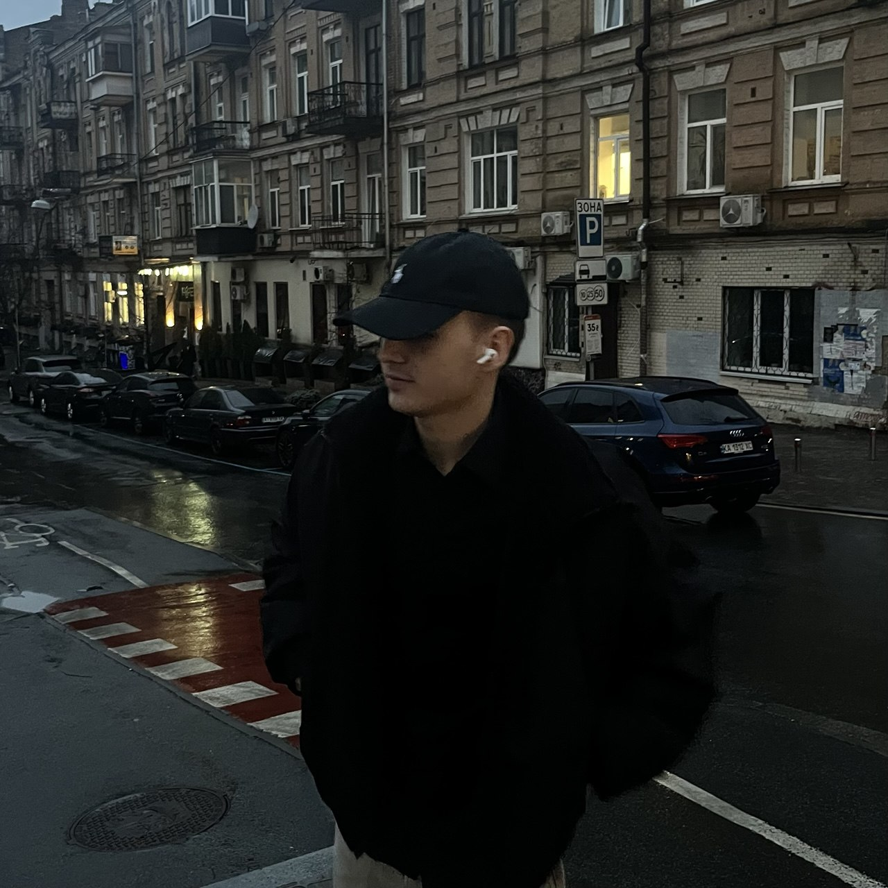

Знаходимо суть
Цілі, аудиторія, контекст, обмеження та критерії успіху.
Створюю виразні цифрові продукти, де сильна ідея, точна структура й надійний код працюють як одна система.
SELECTEDНЕ ЗАПОВНЮЮ
ЕКРАНИ.
ФОРМУЮ
НАПРЯМ.
Кожен проєкт починається не з ефекту, а з причини. Візуальна система, взаємодія й технологія мають підсилювати одну чітку думку.
Авторські концепти, створені як повні цифрові світи: від позиціювання й art direction до адаптивної розробки та motion.
CLARITY BEFORE DECORATION.
CHARACTER BEFORE TRENDS.
FUNCTION WITHOUT BORING.
Працюю напряму, без передачі між людьми. Контекст, дизайн і реалізація залишаються в одних руках.
Лендінги, портфоліо й корпоративні сайти з характером та чіткою логікою.
↗ 02Замовлення, підтримка, оплати й внутрішні сценарії без зайвої рутини.
↗ 03CRM, платежі, дані та сервіси, зібрані в один надійний процес.
↗ 04Домен, хостинг, аналітика, швидкість і технічний супровід після релізу.
↗Кожен етап закінчується конкретним рішенням. Ви завжди бачите, де ми знаходимось і що буде далі.
Цілі, аудиторія, контекст, обмеження та критерії успіху.
Структура, прототип, візуальний напрям і правила взаємодії.
Розробка, motion, інтеграції та адаптація під реальні екрани.
Тести, оптимізація, аналітика, документація та підтримка.

FOUNDER / DESIGNER / DEVELOPERЯ Віталій — дизайнер і розробник із Києва, засновник WITER. Особисто веду кожен проєкт від першої розмови до запуску.
Ціную ясність, сильну візуальну ідею та код, який не створює проблем після релізу.
Є ідея, продукт або процес, якому потрібен напрям?
EMAILSTUDIOWITER@OUTLOOK.COM↗TELEGRAM@ABSTRACTUALLY↗